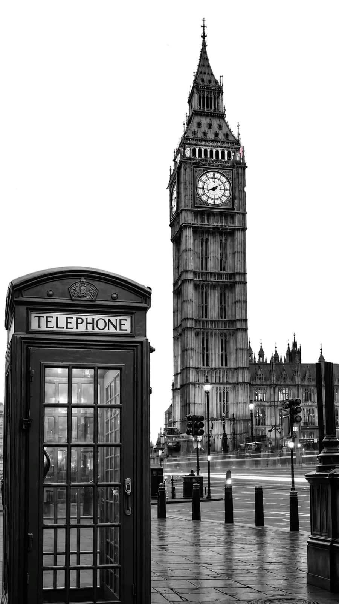
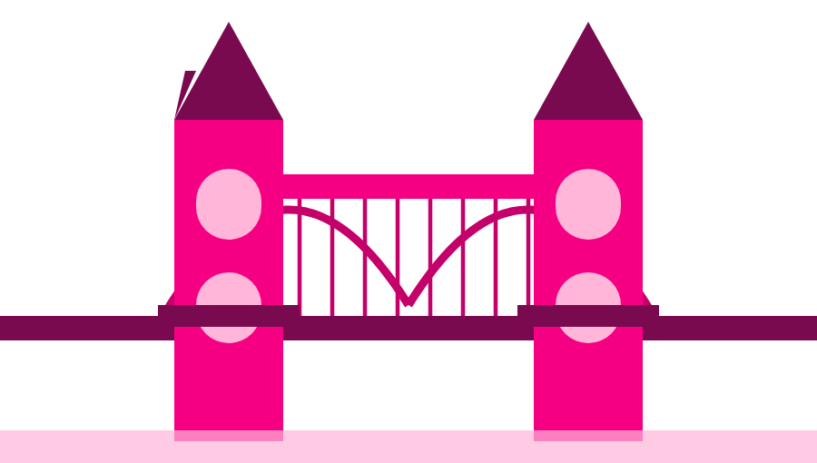
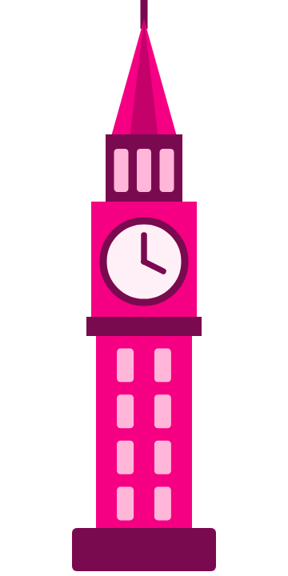
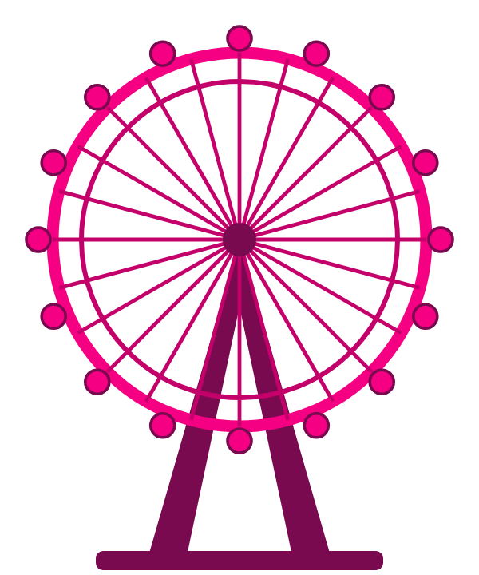
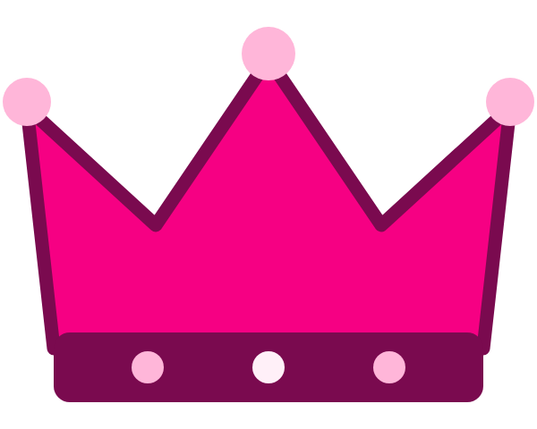
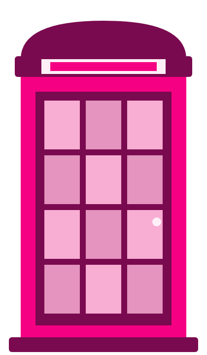
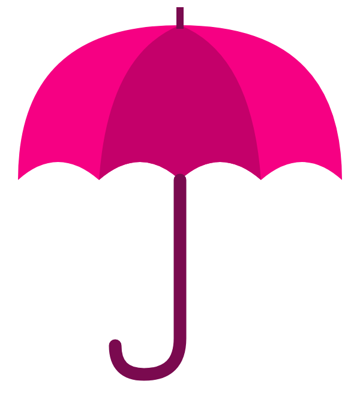

✝ Ceremonia religiosa
Misa
9:00 a. m.
Iglesia Rectoría San Pedro y San Pablo
Barrio de San Pedrito
San Mateo Atenco, Estado de México


Hay momentos que se quedan para siempre en el corazón… y uno de ellos es cuando sueñas, brillas y celebras tus XV años.
Por ello, tengo el honor de invitarte a compartir conmigo este día tan especial.



Sábado 19 de diciembre de 2026
María Inez Ortiz Escutia
y
Cristian Becerril Segura
Iglesia Rectoría San Pedro y San Pablo
Barrio de San Pedrito
San Mateo Atenco, Estado de México

Salón Express
Calle 13 de Octubre esquina Juan Aldama
Barrio de Santiago, San Mateo Atenco

Elegante / formal
Te pedimos amablemente evitar el color azul, reservado exclusivamente para la festejada.
Tu presencia hará aún más especial este momento.
Con cariño, Yunuen